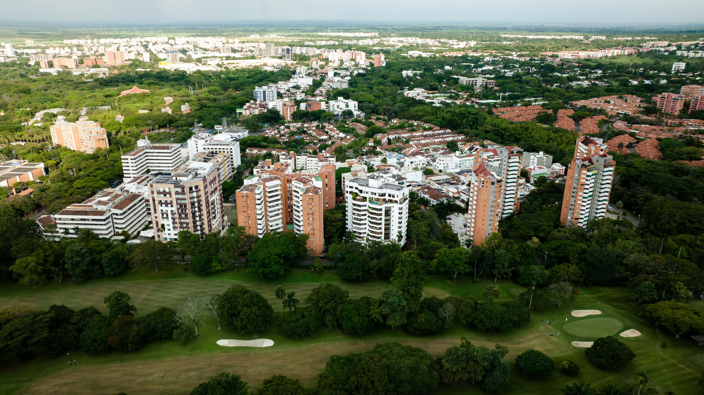

Descubre el Valle del Cauca
El Valle del Cauca es un departamento diverso que combina modernidad, cultura y naturaleza. Cali, su capital, es reconocida como la capital mundial de la salsa y un centro turístico, gastronómico y cultural. Además, el Valle ofrece playas en Buenaventura, parques naturales y haciendas azucareras.
En A&G TOURS brindamos transporte turístico y empresarial en el Valle del Cauca, conectando destinos como Cali, Buga, Buenaventura, los Farallones y las rutas culturales del Pacífico colombiano.
Nuestro objetivo es ser tu aliado en turismo en el Valle del Cauca, con un servicio de transporte seguro, confiable y de calidad para familias, empresas y viajeros internacionales.
Cali, ciudad de salsa
Cali es reconocida mundialmente por su música, sus escuelas de baile y su vibrante vida nocturna. Además, ofrece lugares históricos como el Barrio San Antonio y miradores para ver la ciudad desde lo alto.

Lago Calima y naturaleza
El Lago Calima es uno de los destinos favoritos para deportes náuticos, camping y descanso en medio de la naturaleza. Su clima fresco lo convierte en un lugar perfecto para toda la familia.
¡Contáctanos!